1 · The opener is the brand what the nineteen videos do in their first seconds
Every lecture opens the same way: one full-frame bright illustration (a robot among animals in a golden-hour landscape; a few are photographed landscapes), the lesson title in a frosted white box low in the frame, the presenter in a tile top-right, held still with no camera move for 7 to 20 seconds, then a hard cut to a pure black lesson. The series is recognisable from the thumbnail alone, and the thumbnail is the opener.
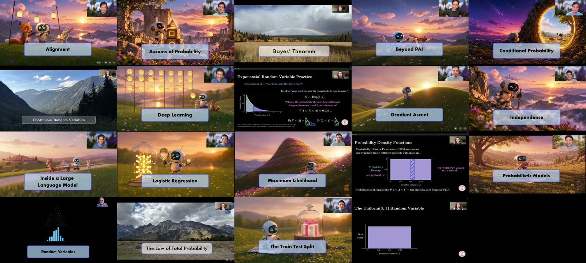
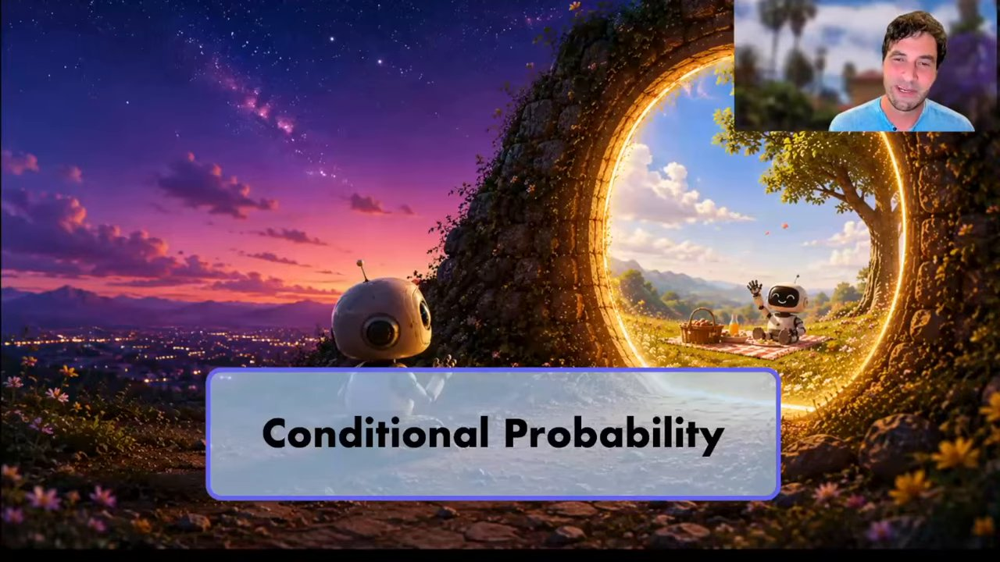
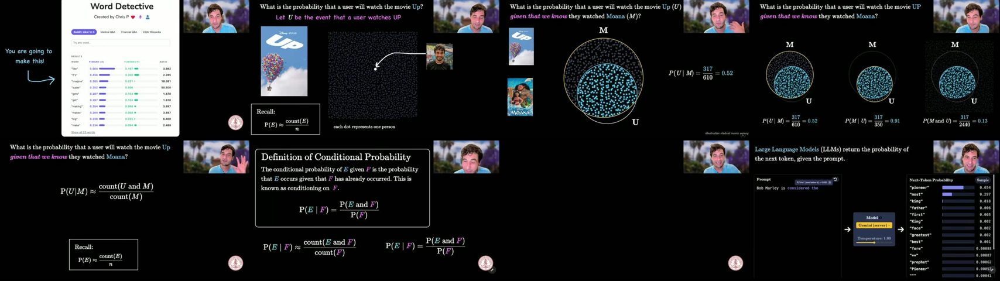
Our opener options drawn in code, deterministic, playable
The owner's correction (2026-11-21, evening): the Zero State owl portrait (edge-ogt-engine/static/owl-logo-full.png, 642×642 on black) is the owl, not a cartoon. Options A and B now carry it as a photo inside a drawn landscape, masked so its black edge dissolves into the dark side of each frame, with a slow push-in as the only motion on it; C keeps the drawn owl in flight. All three are SVG scenes the kit can render frame by frame today. Each carries the three fixed parts: the frosted title box, the OWL GROUP TRADING wordmark, and the 300×169 tile top-right where Ken is composited at render. Scrub, play, and switch the title to see the box fit.
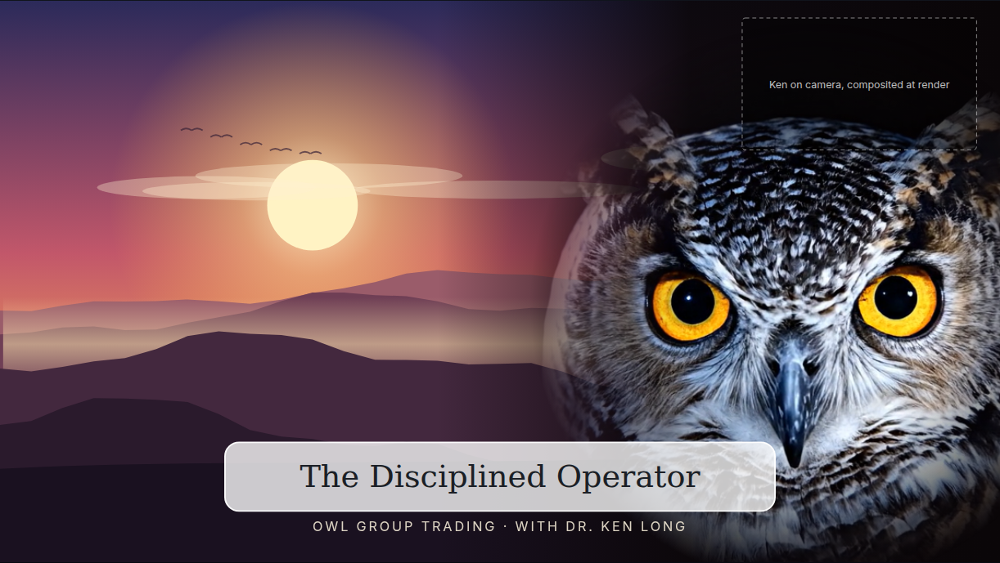
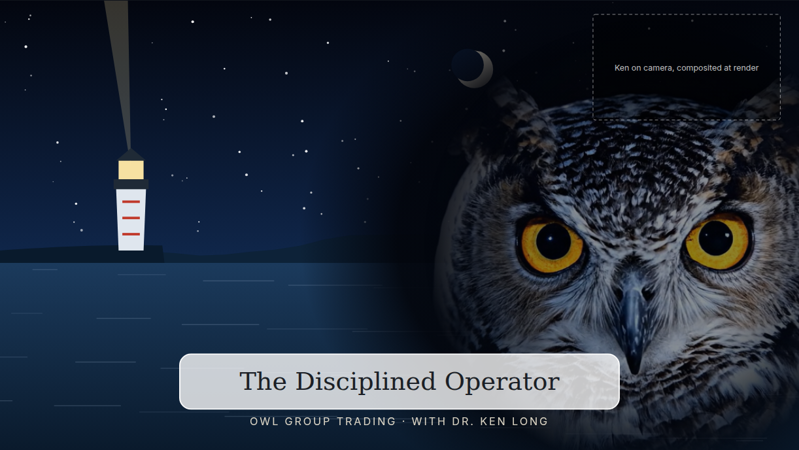
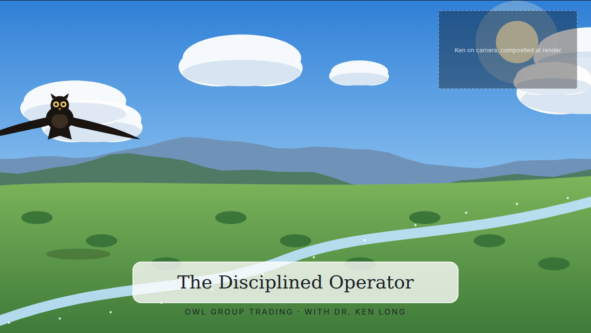
The gap, flagged for growogtx
The Stanford openers are painted illustrations with a recurring character in a different scene each lesson. We have one owl picture: a head-on portrait on black. It carries A and B well because both keep the owl in the dark side of the frame; it cannot be perched, turned or flown. A set of the same owl photographed or generated in six to eight settings (one per course family) remains the brief for growogtx. Until then A or B ships as the opener; the frame (title box, wordmark, tile) stays the same when the picture changes.
2 · Bigger on the screen measured, then two answers
Their lesson type is big because the lesson is the whole frame. Ours sits inside a bordered card, with labels about half their size.
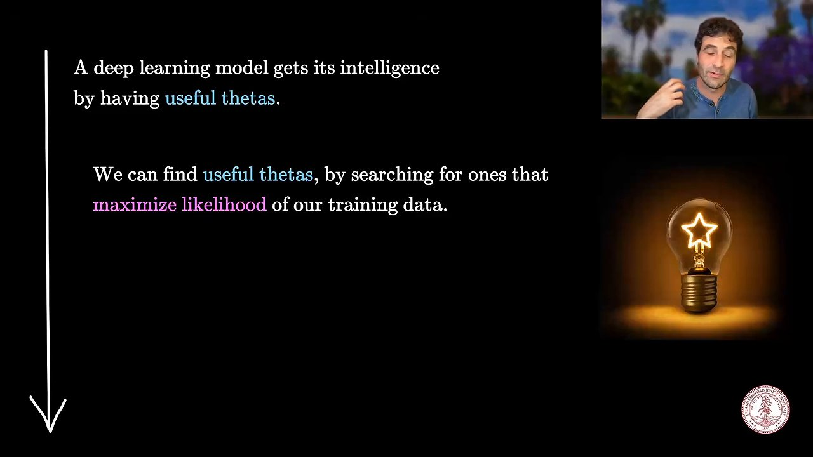
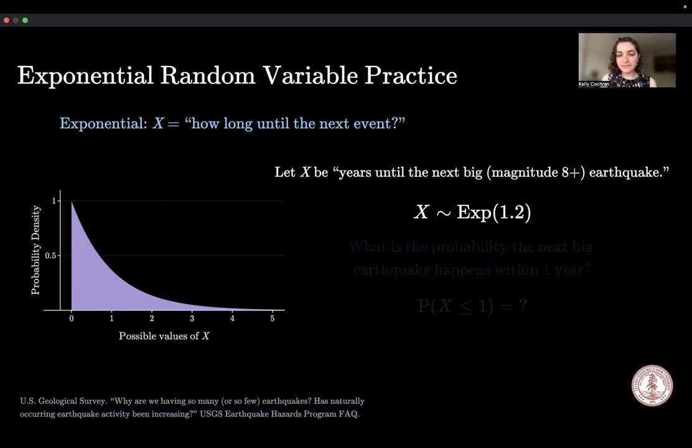
| Measured at 1280×720 | Stanford lessons | Ours (ink, a cut twin) |
|---|---|---|
| In-scene label type | 26–42 px | 12–16 px in the SVG → 13–18 px on screen |
| Title or caption type | 40–48 px | 32 px caption (29 px on a pip twin) |
| Figure width | ≈ 60–75 % of frame | ≈ 45–55 % of the card |
| Scene area | full frame, black | 1160×518 card, bordered, on a 1280×720 stage |
| Presenter tile | ≈ 333×187 (26 %) | 300×169 (23 %) |
| Opener hold | 7–20 s static | title card 4–6 s |
The 1280×720 numbers are from frames; the render is 1920×1080, where everything scales by 1.5.
Answer one: the stage style in anim_kit.STYLES today
Pure black, no card, the scene scaled to the full width with the caption above and the gloss below, type 1.1× (more collides labels laid out for ink). An existing scene runs unchanged: about ten percent larger and a cleaner frame. It does not make a small scene big.
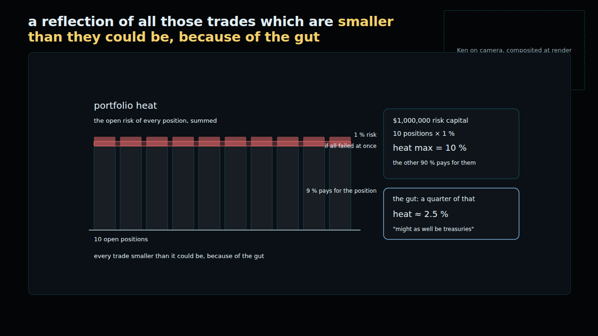
ink, as it ships.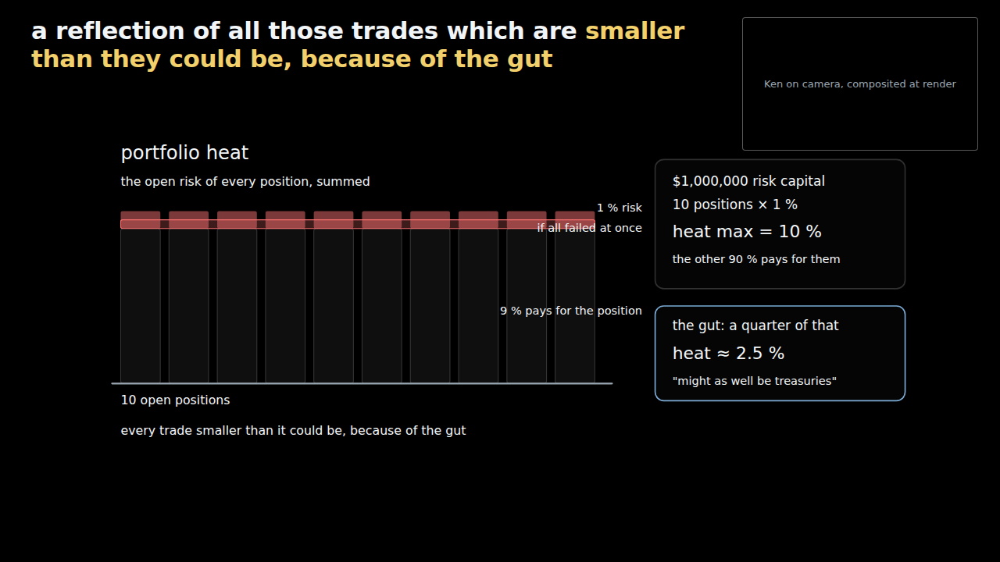
stage: no card, no border, 10 % larger. The small labels are still small.Answer two: author for the stage the rule that matters
The same scene rewritten under the bigger rules: one figure across the left 700 px, labels at 20–34 px, the numbers in a right column at 30 px, no boxed cards. Same beats, same words at the same seconds. This is the version the rest of the Disciplined Operator would move to if the owner wants the Stanford scale. Play it (the kit page; the caption changes on his words).
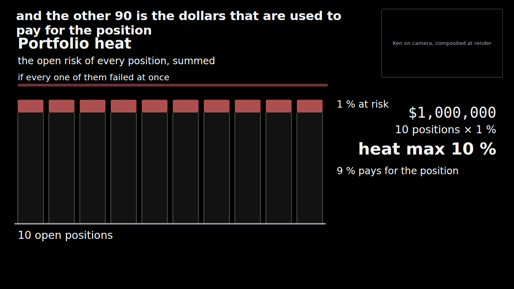
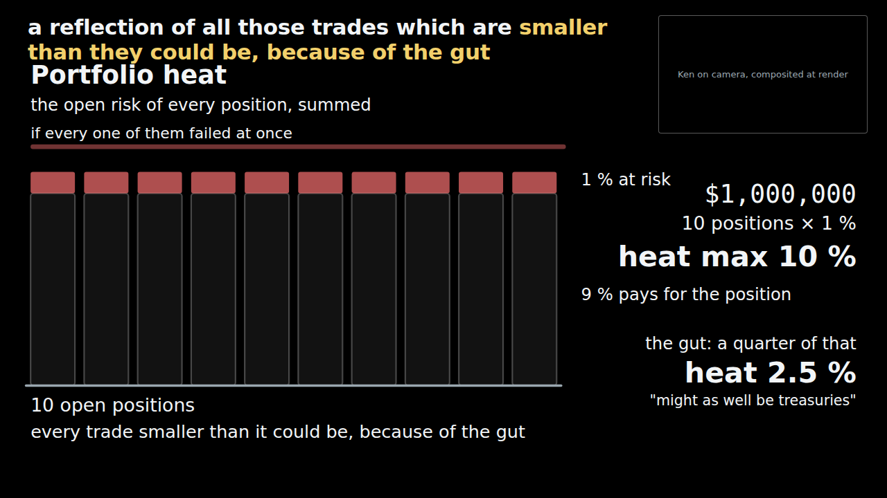
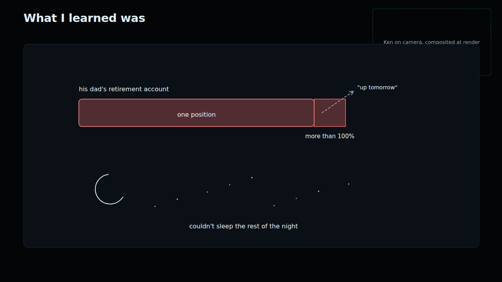
ink: the retirement-account scene.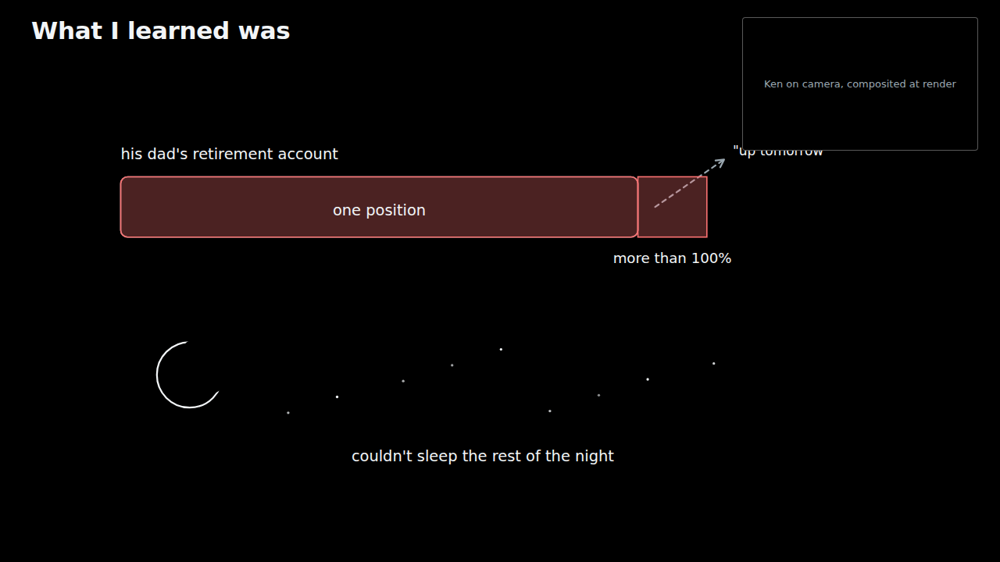
stage: better frame, same small labels. A scene with one big figure gains the most from re-authoring.3 · What to add to the animation skill nine rules read from their lessons
Most of these cost nothing but discipline; two need a line of code. Those marked skill are in the anim-overdub skill as of today; kit marks a kit change.
skillDestination first
Their lessons open cold on "by the end of this lesson you will be able to…" before any picture. Ours open on his first sentence. For a course with a scripted explainer (s27 in the Disciplined Operator), the first beat names what the viewer will be able to do; for a cut, the title card's subtitle carries it.
skillOne idea per screen, the figure across the frame
A lesson screen holds one sentence and one figure; the figure spans 60–75 % of the width. For a stage scene: one figure across the left 700 px of the 1160, numbers in a right column, no boxed cards (a card inside a frame is a slide inside a slide).
skillType sizes for the stage
Labels 20–34 px in the SVG, the figure's title 30 px, the biggest number 34 px bold, nothing below 17 px. Strokes 2.5–3 px. The ink sizes (12–16 px) are for a card; a stage scene written at those sizes is the small picture on a big black field.
skillKey words in colour, the rest plain
Their serif body is white with the operative noun or number in one colour. Ours already does this in the caption (<em> turns amber); the rule extends to in-scene labels: one accent per screen, the number he says.
skillRecall boxes
When he refers back to something from earlier ("remember the heat number"), the earlier figure returns small in a corner box for a few seconds, not redrawn in full. Deterministic: draw it from the same helper at a smaller scale.
skillSources small, in frame
A credit (a book, a study, a person he names) sits at 14 px at the bottom edge for the beat he names it, never in the caption. Our honesty rule already keeps credits to his words; this fixes where they go.
skillThe hold
Their openers do not move for 7–20 s. The course opener holds the picture with a slow ambient motion (the sun, the beam, the glide) and no cut for at least 6 s; the title box fades in at 1.2 s, the wordmark at 2.0 s. The silence is part of it.
kit · nextPersistent seal
They keep a small seal bottom-right for the whole lesson. Not in the kit yet: the stage style should reserve 80×80 at bottom-right for a brand mark, once the owner picks one (the line-icon owl from edge-growogtx/icons would do; flagged with the hero gap above). Scenes already keep that corner clear (nothing below y=505).
kitBlack, not a card
The stage style: pure black, no card, no border, scene scaled to the width. Done; every style stays available per course and a scene is written once.
4 · For the owner to pick
The opener
A, B or C as the course opener frame, or none until a hero character exists. The frame (title box, wordmark, tile) is the same in all three; the picture is the only choice.
The Disciplined Operator's stage
Keep ink as shipped (rev 5, 32/48 in the cutroom), switch to stage unchanged (10 % larger, cleaner), or re-author the sixteen twins under the stage rules as s25 was (about a day's scene work; same beats, same words).
The hero character
Hand growogtx the brief: one owl, six to eight landscapes, painted or generated, at 1920×1080, warm palette. The drawn options stand in until then.
Sources read: the nineteen YouTube lectures the owner linked (Conditional probability through Beyond PAI), fetched at 720p on this box and read as frames; none of the frames here is redistributed beyond this internal page. Our frames: Disciplined Operator v2 s25, Ken Shorts s31. Files: ogt-coursecraft/devtimeartifacts/stanford-style-study-2026-11-21/.